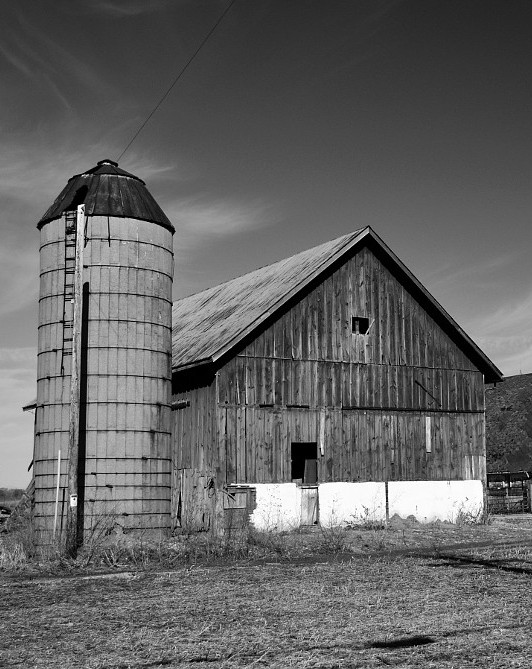
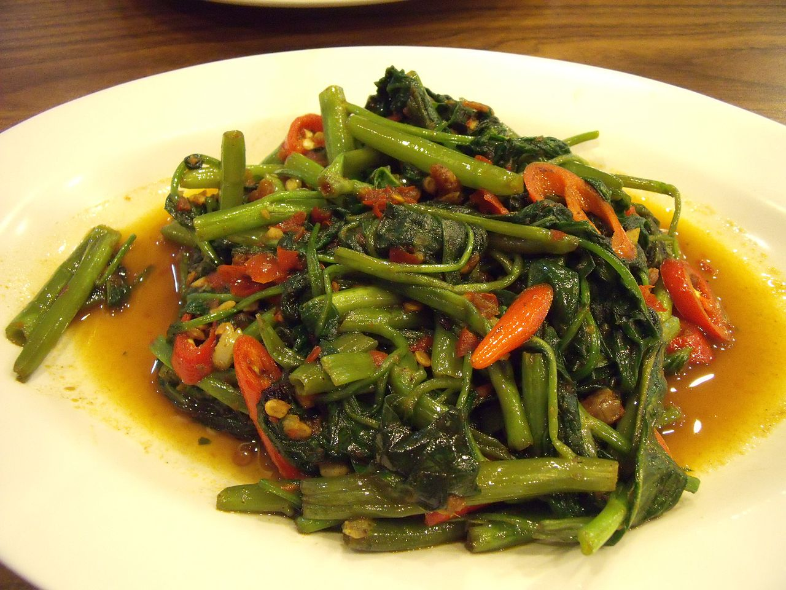

Povrće čine kultivirane i neke samonikle biljke ili njihovi dijelovi namijenjeni prehrani ljudi.
U povrće spadaju različite biljke, koje se upotrebljavaju u prehrani, bilo svježe (u salati) ili termički obrađene ili konzervirane.
Ovisno od vrste za prehranu, upotrebljavaju se cijele biljke ili samo pojedini dijelovi (korijen, stabljika ili listovi).
Povijest

Prije pojave poljoprivrede , ljudi su bili lovci-sakupljači.
Hranili su se za jestivo voće, orašaste plodove, stabljike, lišće, kukolje i gomolje te lovili životinje za hranu.
Smatra se da je vrtlarstvo u tropskoj džungli prvi primjer poljoprivrede; identificirane su korisne biljne vrste i potaknute na rast dok su nepoželjne uklonjene.
Ubrzo je uslijedio uzgoj biljaka kroz selekciju sojeva sa poželjnim osobinama kao što su veliki plodovi i snažan rast.
Dok su prvi dokazi za pripitomljavanje trava kao što su pšenica i ječam pronađeni u Plodnom polumjesecuna Bliskom istoku,
vjerojatno je da su razni narodi diljem svijeta počeli uzgajati usjeve u razdoblju od 10.000 prije Krista do 7.000 pr.
Prirodna poljoprivreda nastavlja se do danas, s mnogim seoskim poljoprivrednicima u Africi, Aziji,
Južnoj Americi i drugdje koji koriste svoje parcele za proizvodnju dovoljno hrane za svoje obitelji, dok se svaki višak proizvoda koristi za razmjenu za drugu robu.
Prehrana i zdravlje
Povrće igra važnu ulogu u ljudskoj prehrani.
Većina njih ima malo masti i kalorija, ali je glomazna i zasitna.
Oni opskrbljuju dijetalna vlakna i važni su izvori esencijalnih vitamina,
minerala i elemenata u tragovima. Posebno su važni antioksidansi vitamini A, C i E. Kada se povrće uključi u prehranu,
utvrđeno je da se smanjuje učestalost raka, moždanog udara, kardiovaskularnih bolesti i drugih kroničnih bolesti.
Istraživanja su pokazala da, u usporedbi s pojedincima koji jedu manje od tri po
rcije voća i povrća svaki dan, oni koji jedu više od pet porcija imaju otprilike dvadeset posto manji rizik od razvoja koronarne bolesti srca ili moždanog udara. Nutritivni sadržaj povrća znatno varira
neki sadrže korisne količine proteina iako općenito sadrže malo masti, i različite udjele vitamina kao što
su vitamin A, vitamin K i vitamin B6, provitamini, prehrambeni minerali i ugljikohidrati.

Standardi
Međunarodna organizacija za standardizaciju (ISO) postavlja međunarodne standarde kako bi osigurala da su proizvodi i usluge sigurni,
pouzdani i dobre kvalitete. Postoji niz ISO standarda koji se odnose na voće i povrće. ISO 1991-1:1982 navodi botaničke nazive šezdeset i
jedne vrste biljaka koje se koriste kao povrće zajedno s uobičajenim nazivima povrća na engleskom, francuskom i ruskom jeziku.
ISO 67.080.20 pokriva skladištenje i transport povrća i njegovih proizvoda.